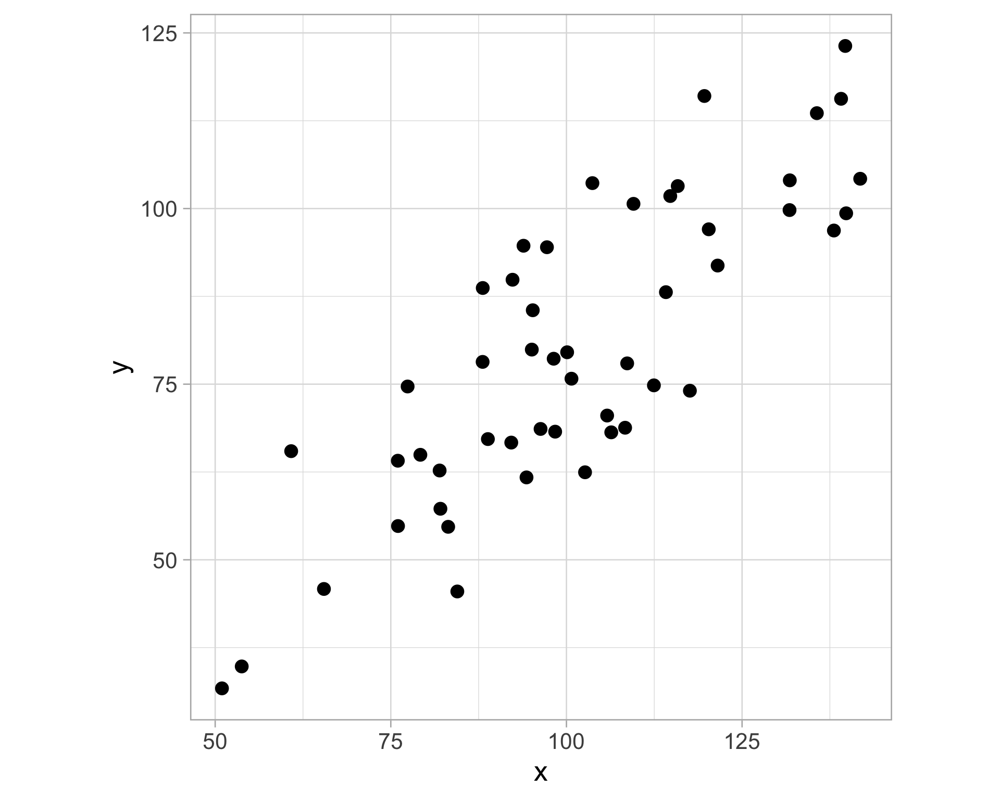
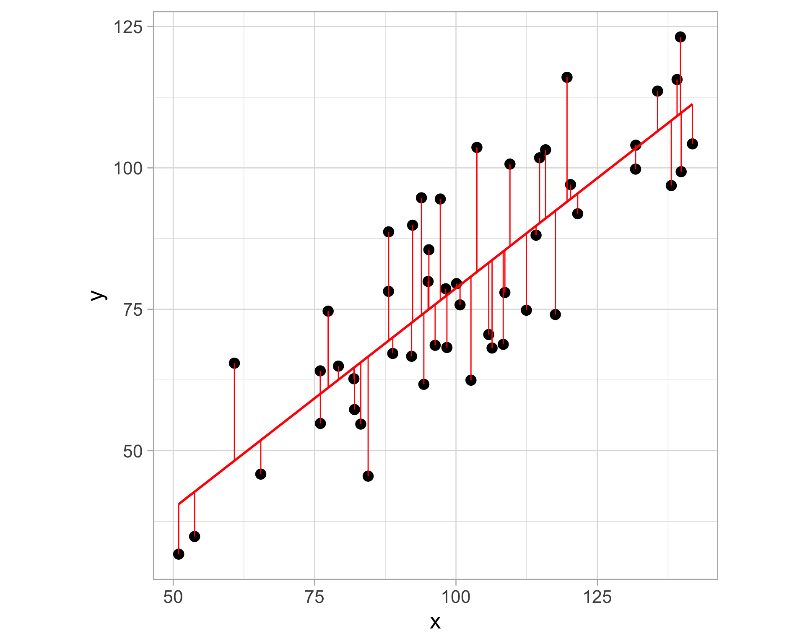
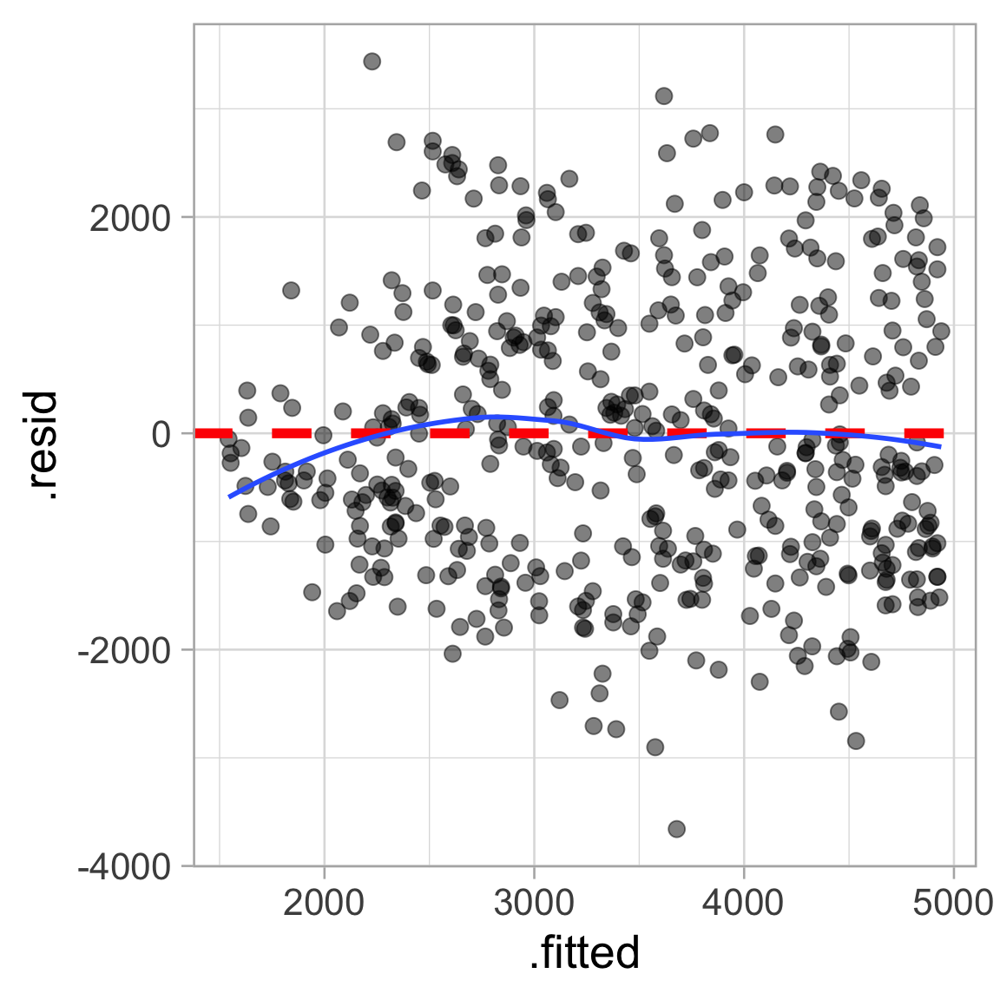
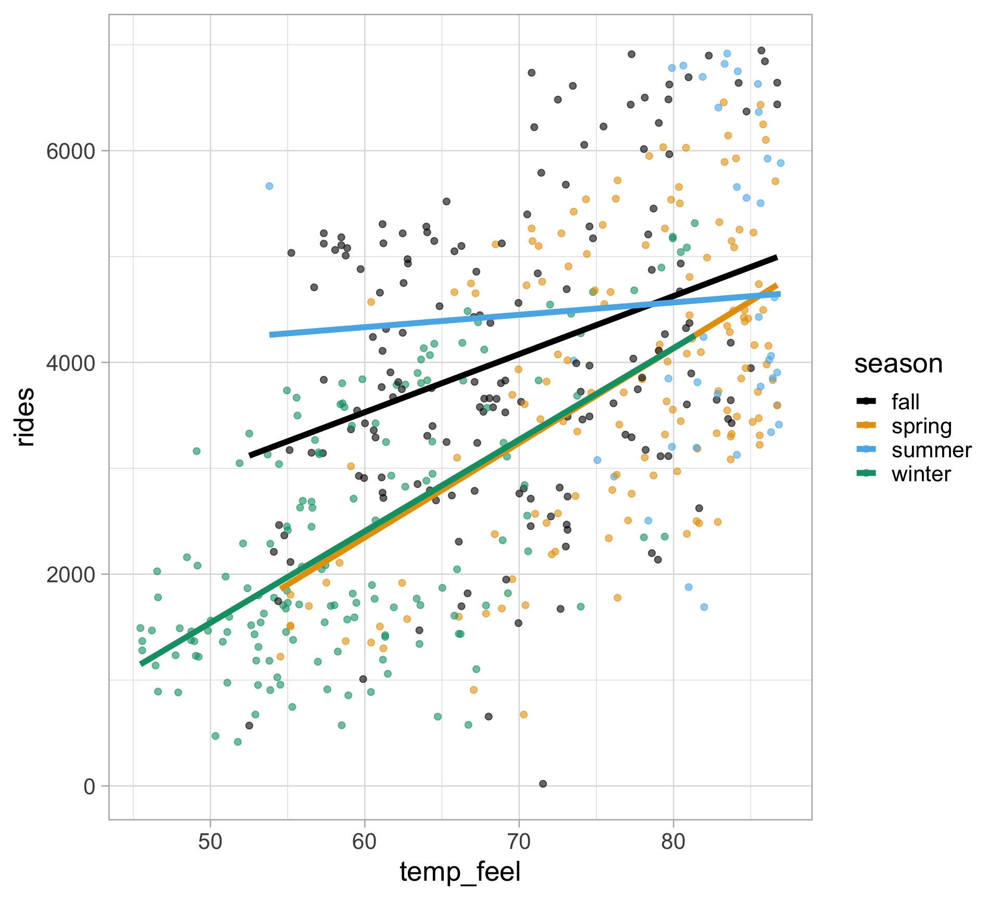
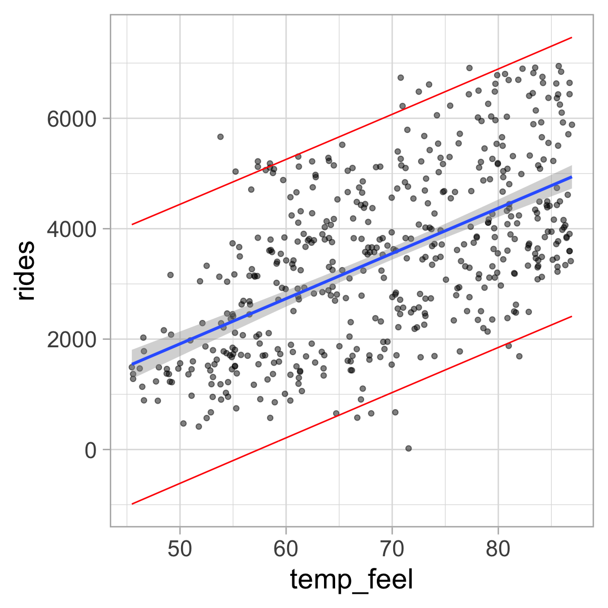

Goal: uncover associations between a set of predictors/features/covariates/explanatory variables and a response variable
Accurately predict unseen test cases
Understand which features affect the response (and how)
Assess the quality of our predictions and inferences
Two main types of problems
Regression: estimate average value of response (i.e. the response is quantitative)
Classification: determine the most likely class of a set of discrete response variable classes (i.e. the response is categorical)
Linear regression (today)
Generalized linear models (GLMs) and penalized versions (lasso, ridge, elastic net)
Smoothing splines, generalized additive models (GAMs)
Decision trees and its variants (e.g., random forests, boosting)
Deep learning, neural networks
Advanced Data Analysis from an Elementary Point of View (aka the greatest book that will never be published)
“Regression”, in statistical jargon, is the problem of guessing the average level of some quantitative response variable from various predictor variables. - Note GOAT
Linear regression is used when the response variable is quantitative
Assume a linear relationship for \(Y = f(X)\) \[Y_{i}=\beta_{0}+\beta_{1} X_{i}+\epsilon_{i}, \quad \text { for } i=1,2, \dots, n\]
\(Y_i\) is the \(i\)th value for the response variable
\(X_i\) is the \(i\)th value for the predictor variable
\(\beta_0\) is an unknown, constant intercept
\(\beta_1\) is an unknown, constant slope
\(\epsilon_i\) is the random noise
assume independent, identically distributed (iid) from a normal distribution
\(\epsilon_i \overset{iid}{\sim}N(0, \sigma^2)\) with constant variance \(\sigma^2\)
We are estimating the conditional expection (mean) for \(Y\):
\[\mathbb{E}[Y_i \mid X_i] = \beta_0 + \beta_1X_i\]
How do we estimate the best fitted line?
Ordinary least squares (OLS) - by minimizing the residual sum of squares (RSS)
\[\text{RSS} \left(\beta_{0}, \beta_{1}\right)=\sum_{i=1}^{n}\left[Y_{i}-\left(\beta_{0}+\beta_{1} X_{i}\right)\right]^{2}=\sum_{i=1}^{n}\left(Y_{i}-\beta_{0}-\beta_{1} X_{i}\right)^{2}\]
\[\widehat{\beta}_{1}=\frac{\sum_{i=1}^{n}\left(X_{i}-\bar{X}\right)\left(Y_{i}-\bar{Y}\right)}{\sum_{i=1}^{n}\left(X_{i}-\bar{X}\right)^{2}} \quad \text{ and } \quad \widehat{\beta}_{0}=\bar{Y}-\widehat{\beta}_{1} \bar{X}\]
where \(\displaystyle \bar{X} = \frac{1}{n}\sum_{i=1}^n X_i\) and \(\displaystyle \bar{Y} = \frac{1}{n}\sum_{i=1}^n Y_i\)
Imagine a 2D scatterplot with different data points
Linear regression aims to find a “best fit” line that minimizes the vertical distance between the line and the data points


RDaily count of rental bikes between years 2011 and 2012 in Capital bikeshare system with the corresponding weather and seasonal information.
library(tidyverse)
theme_set(theme_light())
bikes <- read_csv("https://raw.githubusercontent.com/36-SURE/2025/refs/heads/main/data/bikes.csv")
glimpse(bikes)Rows: 500
Columns: 13
$ date <date> 2011-01-01, 2011-01-03, 2011-01-04, 2011-01-05, 2011-01-0…
$ season <chr> "winter", "winter", "winter", "winter", "winter", "winter"…
$ year <dbl> 2011, 2011, 2011, 2011, 2011, 2011, 2011, 2011, 2011, 2011…
$ month <chr> "Jan", "Jan", "Jan", "Jan", "Jan", "Jan", "Jan", "Jan", "J…
$ day_of_week <chr> "Sat", "Mon", "Tue", "Wed", "Fri", "Sat", "Mon", "Tue", "W…
$ weekend <lgl> TRUE, FALSE, FALSE, FALSE, FALSE, TRUE, FALSE, FALSE, FALS…
$ holiday <chr> "no", "no", "no", "no", "no", "no", "no", "no", "no", "no"…
$ temp_actual <dbl> 57.39952, 46.49166, 46.76000, 48.74943, 46.50332, 44.17700…
$ temp_feel <dbl> 64.72625, 49.04645, 51.09098, 52.63430, 50.79551, 46.60286…
$ humidity <dbl> 80.5833, 43.7273, 59.0435, 43.6957, 49.8696, 53.5833, 48.2…
$ windspeed <dbl> 10.749882, 16.636703, 10.739832, 12.522300, 11.304642, 17.…
$ weather_cat <chr> "categ2", "categ1", "categ1", "categ1", "categ2", "categ2"…
$ rides <dbl> 654, 1229, 1454, 1518, 1362, 891, 1280, 1220, 1137, 1368, …summary()
Call:
lm(formula = rides ~ temp_feel, data = bikes)
Residuals:
Min 1Q Median 3Q Max
-3658.9 -1029.7 -149.7 950.6 3437.8
Coefficients:
Estimate Std. Error t value Pr(>|t|)
(Intercept) -2179.27 358.63 -6.077 2.44e-09 ***
temp_feel 81.88 5.12 15.992 < 2e-16 ***
---
Signif. codes: 0 '***' 0.001 '**' 0.01 '*' 0.05 '.' 0.1 ' ' 1
Residual standard error: 1281 on 498 degrees of freedom
Multiple R-squared: 0.3393, Adjusted R-squared: 0.338
F-statistic: 255.7 on 1 and 498 DF, p-value: < 2.2e-16How do we read the summary output?
Model: \(\ \small \text{Rides} = \beta_0 + \beta_1 \ \text{Temperature} + \epsilon\)
From output: \(\ \small \hat{\beta}_0 = -2179.27\) and \(\small \hat{\beta}_1 = 81.88\)
OLS line: \(\ \ \small \widehat{\text{Rides}} = -2179.27 + 81.88 \ \text{Temperature}\)
Interpretation of \(\hat \beta_1\): estimated change in y for a one unit change in x
In context: For every additional \(^{\circ}\) F in feels-like temperature, the expected ridership increases by about 82 rides.
Call:
lm(formula = rides ~ temp_feel, data = bikes)
Residuals:
Min 1Q Median 3Q Max
-3658.9 -1029.7 -149.7 950.6 3437.8
Coefficients:
Estimate Std. Error t value Pr(>|t|)
(Intercept) -2179.27 358.63 -6.077 2.44e-09 ***
temp_feel 81.88 5.12 15.992 < 2e-16 ***
---
Signif. codes: 0 '***' 0.001 '**' 0.01 '*' 0.05 '.' 0.1 ' ' 1
Residual standard error: 1281 on 498 degrees of freedom
Multiple R-squared: 0.3393, Adjusted R-squared: 0.338
F-statistic: 255.7 on 1 and 498 DF, p-value: < 2.2e-16Estimates of uncertainty for model coefficients via standard errors \[\quad \widehat{SE}(\hat{\beta}_0) = 358.63 \quad \text{and} \quad \widehat{SE}(\hat{\beta}_1) = 5.12\]
We’re testing whether there is a linear relationship between the predictor and the response \[\quad H_0: \beta_1 = 0 \quad \text{vs} \quad H_1: \beta_1 \neq 0\]
Test statistic: \[t = \frac{\hat{\beta}_1}{\widehat{SE}(\hat{\beta}_1)} = \frac{81.88}{5.12} = 15.99\]
Call:
lm(formula = rides ~ temp_feel, data = bikes)
Residuals:
Min 1Q Median 3Q Max
-3658.9 -1029.7 -149.7 950.6 3437.8
Coefficients:
Estimate Std. Error t value Pr(>|t|)
(Intercept) -2179.27 358.63 -6.077 2.44e-09 ***
temp_feel 81.88 5.12 15.992 < 2e-16 ***
---
Signif. codes: 0 '***' 0.001 '**' 0.01 '*' 0.05 '.' 0.1 ' ' 1
Residual standard error: 1281 on 498 degrees of freedom
Multiple R-squared: 0.3393, Adjusted R-squared: 0.338
F-statistic: 255.7 on 1 and 498 DF, p-value: < 2.2e-16Recall that we’re testing \[\quad H_0: \beta_1 = 0 \quad \text{vs} \quad H_1: \beta_1 \neq 0\]
\(p\)-value (i.e., Pr(>|t|)): probability of observing a value as extreme as the observed test statistic (under the null hypothesis)
\(p\)-value \(< \alpha = 0.05\) (conventional threshold): sufficient evidence to reject the null hypothesis that the coefficient is zero
In context: There is a statistically significant association between temperature and number of bikeshare rides, \(\small \hat \beta_1 = 81.88, t = 15.99,p\)-value \(<0.001\).
broom packageThe 3 broom functions (Note: the output is always a tibble)
tidy(): coefficients table in a tidy format
glance(): produces summary metrics of a model fit
augment(): adds/“augments” columns to the original data (e.g., adding predictions)
# A tibble: 2 × 5
term estimate std.error statistic p.value
<chr> <dbl> <dbl> <dbl> <dbl>
1 (Intercept) -2179. 359. -6.08 2.44e- 9
2 temp_feel 81.9 5.12 16.0 9.29e-47# A tibble: 1 × 12
r.squared adj.r.squared sigma statistic p.value df logLik AIC BIC
<dbl> <dbl> <dbl> <dbl> <dbl> <dbl> <dbl> <dbl> <dbl>
1 0.339 0.338 1281. 256. 9.29e-47 1 -4286. 8579. 8591.
# ℹ 3 more variables: deviance <dbl>, df.residual <int>, nobs <int># A tibble: 2 × 7
term estimate std.error statistic p.value conf.low conf.high
<chr> <dbl> <dbl> <dbl> <dbl> <dbl> <dbl>
1 (Intercept) -2179. 359. -6.08 2.44e- 9 -2884. -1475.
2 temp_feel 81.9 5.12 16.0 9.29e-47 71.8 91.9In-context interpretation (for temp_feel)
\(R^2\) estimates the proportion of the variance of \(Y\) explained by \(X\)
More generally: variance of model predictions / variance of \(Y\)
We can use the predict() or fitted() function to get the fitted values from the regression model
Useful diagnostic (for any type of model, not just linear regression!)
Augment the data with model output using the broom package
augment() adds various columns from model fit we can use in plotting for model diagnostics
Simple linear regression assumes \(Y_i \overset{iid}{\sim} N(\beta_0 + \beta_1 X_i, \sigma^2)\)
Plot residuals against \(\hat{Y}_i\), residuals vs fit plot
Used to assess linearity, any divergence from mean 0
Used to assess equal variance, i.e., if \(\sigma^2\) is homogenous across predictions/fits \(\hat{Y}_i\)
More difficult to assess the independence and fixed \(X\) assumptions
Residuals = observed - predicted
Interpretation of residuals in context?
Conditional on the predicted values, the residuals should have a mean of zero
Residuals should NOT display any pattern
Two things to look for:
Any trend around horizontal reference line?
Equal vertical spread?

rides by the season (4 levels: spring, summer, fall, winter)We are changing the intercept of our regression line by including a categorical variable
Notice we only get 3 coefficients for the season besides the intercept \[\widehat{\text{Rides}} = 4051 - 265 \ I_{\texttt{spring}} + 543 \ I_{\texttt{summer}} - 1686 \ I_{\texttt{winter}}\]
# A tibble: 4 × 7
term estimate std.error statistic p.value conf.low conf.high
<chr> <dbl> <dbl> <dbl> <dbl> <dbl> <dbl>
1 (Intercept) 4051. 107. 38.0 7.15e-149 3841. 4260.
2 seasonspring -265. 158. -1.68 9.35e- 2 -574. 44.8
3 seasonsummer 543. 246. 2.21 2.76e- 2 60.2 1027.
4 seasonwinter -1686. 152. -11.1 1.11e- 25 -1985. -1388. \[\widehat{\text{Rides}} = 4050.7 - 264.7 \ I_{\texttt{spring}} + 543.5 \ I_{\texttt{summer}} - 1686.3 \ I_{\texttt{winter}}\]
By default, R turns the categorical variables of \(m\) levels (e.g. 4 seasons in this dataset) into \(m-1\) indicator/dummy variables for different categories relative to a baseline/reference level
Indicator/dummy variables: binary variables (1: that level, 0: not that level)
R uses alphabetical order to determine the reference level (fall season in this case)
\[\widehat{\text{Rides}} = 4050.7 - 264.7 \ I_{\texttt{spring}} + 543.5 \ I_{\texttt{summer}} - 1686.3 \ I_{\texttt{winter}}\]
The intercept term gives us the (baseline) average y for the reference level
The values for the coefficient estimates indicate the expected change in the response variable relative to the reference level
Similar to before, we can plot the actual and predicted ridership
To reiterate, all we’re doing is changing the intercept of our regression line by including a categorical variable
Example: interaction between a categorical variable (season) and a quantitative variable (temp_feel)
When to include interaction? When we believe relationships between a quantitative variable and the response differ across categories (of a categorical variable)
4 different lines for each season in modeling relationship between rides and temp_feel
This means those regression lines have different intercepts as well as different slopes

\[ \begin{aligned} {\text{Rides}} &= \beta_0 + \beta_1 \ \text{Temp} + \beta_2 \ I_{\texttt{spring}} + \beta_3 \ I_{\texttt{summer}} + \beta_4 \ I_{\texttt{winter}} \\ &+ \beta_5 \{ \text{Temp } \times I_{\texttt{spring}} \} + \beta_6 \{ \text{Temp } \times I_{\texttt{summer}} \} + \beta_7 \{ \text{Temp } \times I_{\texttt{winter}} \} + \epsilon \\ \end{aligned} \]
# A tibble: 8 × 5
term estimate std.error statistic p.value
<chr> <dbl> <dbl> <dbl> <dbl>
1 (Intercept) 238. 773. 0.308 0.758
2 temp_feel 54.9 11.0 4.97 0.000000935
3 seasonspring -3244. 1222. -2.65 0.00819
4 seasonsummer 3393. 2921. 1.16 0.246
5 seasonwinter -3020. 1032. -2.93 0.00358
6 temp_feel:seasonspring 34.4 16.6 2.07 0.0386
7 temp_feel:seasonsummer -43.2 35.9 -1.20 0.229
8 temp_feel:seasonwinter 31.6 15.8 1.99 0.0466 \(\beta_0\) and \(\beta_1\) give the slope and intercept for the regression line (describing the relationship between ridership & temperature) for fall season (the reference level)
\(\beta_2\) measures the difference in the intercepts between spring and fall seasons
\(\beta_5\) shows how much the slopes change as we move from the regression line for fall (the reference level) to the line for spring
and so on…
We can include as many variables as we want (assuming \(n > p\))
\[Y=\beta_{0}+\beta_{1} X_{1}+\beta_{2} X_{2}+\cdots+\beta_{p} X_{p}+\epsilon\]
OLS estimates in matrix notation ( \(\boldsymbol{X}\) is a \(n \times p\) matrix):
\[\hat{\boldsymbol{\beta}} = (\boldsymbol{X} ^T \boldsymbol{X})^{-1}\boldsymbol{X}^T\boldsymbol{Y}\]
Can just add more variables to the formula in R
Use adjusted \(R^2\) when including multiple variables \(\displaystyle 1 - \frac{(1 - R^2)(n - 1)}{(n - p - 1)}\)
Adjusts for the number of variables in the model \(p\)
Adding more variables will always increase the model’s (unadjusted) \(R^2\)
READ THIS: \(R^2\) myths
Model: \(Y=\beta_{0}+\beta_{1} X_{1}+\beta_{2} X_{2}+\cdots+\beta_{p} X_{p}+\epsilon\)
\(\epsilon_i\) is the random noise: assume independent and identically distributed (iid) from a Normal distribution \(\epsilon_i \overset{iid}{\sim}N(0, \sigma^2)\) with constant variance \(\sigma^2\)
In order to perform inference, we need to impose additional assumptions
By assuming \(\epsilon_i \overset{iid}{\sim}N(0, \sigma^2)\), what we really mean is \(Y \overset{iid}{\sim}N(\beta_{0}+\beta_{1} X_{1}+\beta_{2} X_{2}+\cdots+\beta_{p} X_{p}, \sigma^2)\)
Unbiased estimate \(\displaystyle \hat{\sigma}^2 = \frac{\text{RSS}}{n - (p + 1)}\)
Degrees of freedom: \(n - (p + 1)\), data supplies us with \(n\) “degrees of freedom” and we used up \(p + 1\)
Do we want to predict the mean response for a particular value \(x^*\) of the explanatory variable or do we want to predict the response for an individual case?
Example:
if we would like to know the average ridership for all days with feels-like temperature of 70 degrees Fahrenheit, then we would use an interval for the mean response
if we want an interval to contain the ridership of a particular day with feels-like temperature of 70 degrees Fahrenheit, then we need the interval for a single prediction
Interval estimate for the MEAN response at a given observation (i.e. for the predicted AVERAGE \(\hat{\beta}_0 + \hat{\beta}_1 x^*\))
Based on standard errors for the estimated regression line at \(x^*\) \[SE_{\text{line}}\left(x^{*}\right)=\hat{\sigma} \cdot \sqrt{\frac{1}{n}+\frac{\left(x^{*}-\bar{x}\right)^{2}}{\sum_{i=1}^{n}\left(x_{i}-\bar{x}\right)^{2}}}\]
Variation only comes from uncertainty in the parameter
interval estimate for an INDIVIDUAL response at a given (new) observation
add the variance \(\sigma^2\) of a single predicted value \[SE_{\text{pred}}\left(x^{*}\right)=\hat{\sigma} \cdot \sqrt{1 + \frac{1}{n}+\frac{\left(x^{*}-\bar{x}\right)^{2}}{\sum_{i=1}^{n}\left(x_{i}-\bar{x}\right)^{2}}}\]
Variation comes from uncertainty in parameter estimates and error variance
Generate 95% intervals
The standard error for predicting an individual response will always be larger than for predicting a mean response
Prediction intervals will always be wider than confidence intervals
